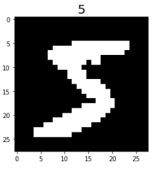
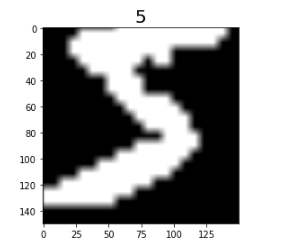

Loading and Processing Data
Ascend GPU CPU Beginner Data Preparation

MindSpore provides APIs for loading common datasets and datasets in standard formats. You can directly use the corresponding dataset loading class in mindspore.dataset to load data. The dataset class provides common data processing APIs for users to quickly process data.
Data Preparation
Execute the following command to download and decompress the dataset to the specified location.
mkdir ./datasets
wget -N https://mindspore-website.obs.cn-north-4.myhuaweicloud.com/notebook/datasets/cifar-10-binary.tar.gz --no-check-certificate
wget -N https://mindspore-website.obs.cn-north-4.myhuaweicloud.com/notebook/datasets/MNIST_Data.zip --no-check-certificate
unzip -d ./datasets -o MNIST_Data.zip
tar -zxvf cifar-10-binary.tar.gz -C ./datasets
Loading the Dataset
In the following example, the CIFAR-10 dataset is loaded through the Cifar10Dataset API, and the first five samples are obtained using the sequential sampler.
import mindspore.dataset as ds
DATA_DIR = "./datasets/cifar-10-batches-bin"
sampler = ds.SequentialSampler(num_samples=5)
dataset = ds.Cifar10Dataset(DATA_DIR, sampler=sampler)
Iterating Dataset
You can use create_dict_iterator to create a data iterator to iteratively access data. The following shows the image shapes and labels.
for data in dataset.create_dict_iterator():
print("Image shape: {}".format(data['image'].shape), ", Label: {}".format(data['label']))
Image shape: (32, 32, 3) , Label: 6
Image shape: (32, 32, 3) , Label: 9
Image shape: (32, 32, 3) , Label: 9
Image shape: (32, 32, 3) , Label: 4
Image shape: (32, 32, 3) , Label: 1
Customizing Datasets
For datasets that cannot be directly loaded by MindSpore, you can build a custom dataset class and use the GeneratorDataset API to customize data loading.
import numpy as np
np.random.seed(58)
class DatasetGenerator:
def __init__(self):
self.data = np.random.sample((5, 2))
self.label = np.random.sample((5, 1))
def __getitem__(self, index):
return self.data[index], self.label[index]
def __len__(self):
return len(self.data)
You need to customize the following class functions:
__init__
When a dataset object is instantiated, the
__init__function is called. You can perform operations such as data initialization.def __init__(self): self.data = np.random.sample((5, 2)) self.label = np.random.sample((5, 1))
__getitem__
Define the
__getitem__function of the dataset class to support random access and obtain and return data in the dataset based on the specifiedindexvalue.The return value of the
__getitem__function needs to be a tuple of numpy arrays. When returning a single numpy array, it can be written asreturn (np_array_1,).def __getitem__(self, index): return self.data[index], self.label[index]
__len__
Define the
__len__function of the dataset class and return the number of samples in the dataset.def __len__(self): return len(self.data)
After the dataset class is defined, the GeneratorDataset API can be used to load and access dataset samples in the user-defined mode.
dataset_generator = DatasetGenerator()
dataset = ds.GeneratorDataset(dataset_generator, ["data", "label"], shuffle=False)
for data in dataset.create_dict_iterator():
print('{}'.format(data["data"]), '{}'.format(data["label"]))
[0.36510558 0.45120592] [0.78888122]
[0.49606035 0.07562207] [0.38068183]
[0.57176158 0.28963401] [0.16271622]
[0.30880446 0.37487617] [0.54738768]
[0.81585667 0.96883469] [0.77994068]
Data Processing and Augmentation
Processing Data
The dataset APIs provided by MindSpore support common data processing methods. You only need to call the corresponding function APIs to quickly process data.
In the following example, the datasets are shuffled, and then two samples form a batch.
ds.config.set_seed(58)
# Shuffle the data sequence.
dataset = dataset.shuffle(buffer_size=10)
# Perform batch operations on datasets.
dataset = dataset.batch(batch_size=2)
for data in dataset.create_dict_iterator():
print("data: {}".format(data["data"]))
print("label: {}".format(data["label"]))
data: [[0.36510558 0.45120592]
[0.57176158 0.28963401]]
label: [[0.78888122]
[0.16271622]]
data: [[0.30880446 0.37487617]
[0.49606035 0.07562207]]
label: [[0.54738768]
[0.38068183]]
data: [[0.81585667 0.96883469]]
label: [[0.77994068]]
Where,
buffer_size: size of the buffer for shuffle operations in the dataset.
batch_size: number of data records in each group. Currently, each group contains 2 data records.
Data Augmentation
If the data volume is too small or the sample scenario is simple, the model training effect is affected. You can perform the data augmentation operation to expand the sample diversity and improve the generalization capability of the model.
The following example uses the operators in the mindspore.dataset.vision.c_transforms module to perform data argumentation on the MNIST dataset.
Import the c_transforms module and load the MNIST dataset.
import matplotlib.pyplot as plt
from mindspore.dataset.vision import Inter
import mindspore.dataset.vision.c_transforms as c_vision
DATA_DIR = './datasets/MNIST_Data/train'
mnist_dataset = ds.MnistDataset(DATA_DIR, num_samples=6, shuffle=False)
# View the original image data.
mnist_it = mnist_dataset.create_dict_iterator()
data = next(mnist_it)
plt.imshow(data['image'].asnumpy().squeeze(), cmap=plt.cm.gray)
plt.title(data['label'].asnumpy(), fontsize=20)
plt.show()

Define the data augmentation operator, perform the Resize and RandomCrop operations on the dataset, and insert the dataset into the data processing pipeline through map mapping.
resize_op = c_vision.Resize(size=(200,200), interpolation=Inter.LINEAR)
crop_op = c_vision.RandomCrop(150)
transforms_list = [resize_op, crop_op]
mnist_dataset = mnist_dataset.map(operations=transforms_list, input_columns=["image"])
View the data augmentation effect.
mnist_dataset = mnist_dataset.create_dict_iterator()
data = next(mnist_dataset)
plt.imshow(data['image'].asnumpy().squeeze(), cmap=plt.cm.gray)
plt.title(data['label'].asnumpy(), fontsize=20)
plt.show()

For more information, see Data augmentation.